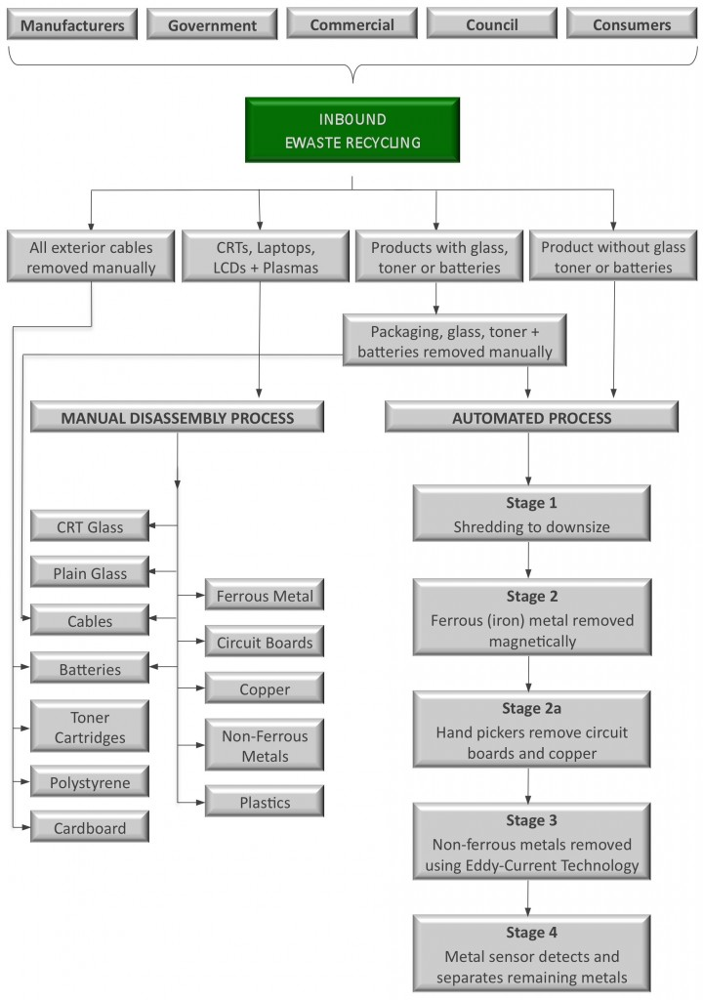
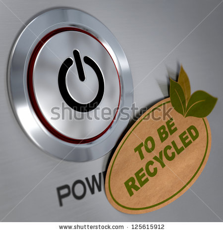

Solutions
E-Waste: Renewable Solutions for a Disposable Society
Recycling
One of many methods to reduce E-Waste in our community is to shunt the flow of electronics from the landfill to recycling centers. The nearest recycling plant that accepts E-Waste is in Midvale, and will accept anything from old fax machines to worn out batteries. Recycling the old electronics can recover up to 95% of materials, and eliminates the risk of harmful chemicals leaching into the ground and water supplies.

Reuse
Another way you can help to combat the growing tide of E-Waste is to use your old electronics for as long as possible before replacing them, or sending them to donation centers where they can be redistributed to people who may have a use for what you consider trash. When sending your electronics to be reused, make sure that the organization will recycle, rather than throw away the old electronics if they are unable to find a recipient.

Local Solutions Availabe to You!
Electronic Waste Drop-Off Locations
The Salt Lake Valley Health Department offers e-waste recycling year-round and free of charge at two county collection facilities:
Salt Lake Valley Landfill Disposal and Recycling Facilities
(801) 974-6920
6030 West California Avenue (1300 South)
Salt Lake City, UT 84104
Trans Jordan Landfill
801 569-8994
10873 South 7200 West, Hwy U-111
South Jordan, Utah
Open Mon - Sat, 8 am - 4 pm
City Recycling Programs
West Jordan: The City of West Jordan has several recycling programs including seasonal green waste pickup; curbside paper, plastic and metal collection; glass recycling drop off sites; and paper and electronic shred events are held four times per year. These programs help keep recyclables out of the landfill.
Paper Shredding and E-Waste Recycling
The City holds four shred days where residents can bring 2 banker's boxes of documents for shredding as well as electronic waste for recycling (no stereo speakers or vacuum cleaners). Hard drives must be removed from the computer if you would like it shredded.
Sandy: Sandy Public Works often receives calls from citizens who want to recycle electronic devices in an environmentally sound manner. The following information is provided to help residents seeking to dispose of their E-waste responsibly and economically.
Sandy City Public Works
8775 South 700 West
801-568-2999
In addition to the collection of antifreeze, batteries, oil, and paint, you may drop-off your e-waste any time Monday - Friday from 7 a.m. until 4:30 p.m. throughout the year, just check-in at the main office. This service is free for all residences in the Salt Lake Valley. No e-waste from businesses will be accepted.